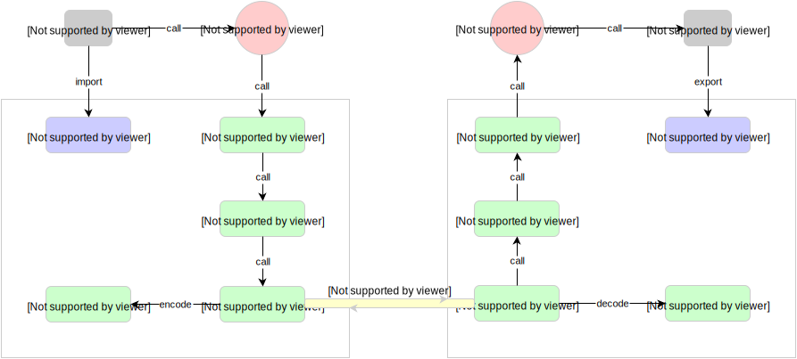

深入浅出 RPC - 深入篇

《深入篇》我们主要围绕 RPC 的功能目标和实现考量去展开，一个基本的 RPC 框架应该提供什么功能，满足什么要求以及如何去实现它？
RPC 功能目标
RPC 的主要功能目标是让构建分布式计算（应用）更容易，在提供强大的远程调用能力时不损失本地调用的语义简洁性。 为实现该目标，RPC 框架需提供一种透明调用机制让使用者不必显式的区分本地调用和远程调用，在前文《浅出篇》中给出了一种实现结构，基于 stub 的结构来实现。 下一节我们将具体细化 stub 结构的实现。
RPC 结构拆解
《浅出篇》给出了一个比较粗粒度的 RPC 实现概念结构，这里我们进一步细化它应该由哪些组件构成，如下图所示。

RPC 服务方通过 RpcServer 去发布（export）远程接口方法，而客户方通过 RpcClient 去引入（import）远程接口方法。
客户方像调用本地方法一样去调用远程接口方法，RPC 框架提供接口的代理实现，实际的调用将委托给代理 RpcProxy 。
代理封装调用信息并将调用转交给 RpcInvoker 去实际执行。
在客户端的 RpcInvoker 使用 RpcProtocol 执行协议编码（encode），并通过连接器 RpcConnector 去维持与服务端的通道 RpcChannel，
通过通道去传输数据。
RPC 服务端接收器 RpcAcceptor 接收客户端的调用请求，同样使用RpcProtocol 执行协议解码（decode）。
解码后的调用信息传递给 RpcProcessor 去控制处理调用过程，最后再委托调用给 RpcInvoker 去实际执行并返回调用结果。
RPC 组件职责
上面我们进一步拆解了 RPC 实现结构的各个组件组成部分，下面我们详细说明下每个组件的职责划分。
RpcClient
负责引入（import）远程接口的代理实现
RpcServer
负责导出（export）远程接口
RpcProxy
远程接口的代理实现
RpcInvoker
客户方实现：负责编码调用信息和发送调用到服务方并等待调用结果返回
服务方实现：负责调用服务端接口的具体实现并返回调用结果
RpcProtocol
负责协议编/解码
RpcConnector
负责维持客户方和服务方的连接通道和发送数据到服务方
RpcAcceptor
负责接收客户方请求并返回请求结果
RpcProcessor
负责在服务方控制调用过程，包括管理调用线程池、超时时间等
RpcChannel
数据传输通道